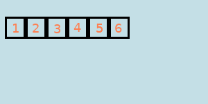
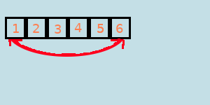
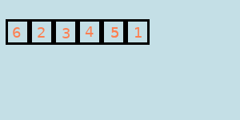
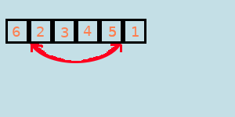
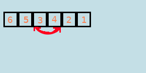
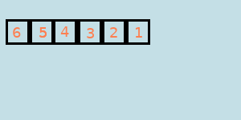
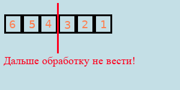
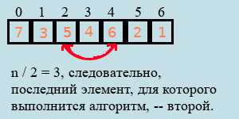

Реверс массива
Итак, вам нужно перевернуть некоторый массив.
Проще всего, конечно, создать новый массив и заполнить его в обратном порядке -- это вообще не требует напряжений головного мозга. Но есть нюансы: придётся тратить память ЭВМ на второй массив, что не всегда позволительно. Поэтому давайте придумаем что-нибудь получше.
Чтобы понять, что будет происходить дальше, вы должны знать, как обменять значениями пару переменных. Рекомендую посмотреть соответствующую статью.
Обмен двух переменных значениямиПрежде всего давайте опишем алгоритм для массива длиной n в графическом виде. Казалось бы, надо просто поменять значениями элементы 0 и n - 1, 1 и n - 2 и так далее. Но есть нюансы:
     Хотя мы обработали только половину массива, алгоритм уже завершил своё выполнение. Следовательно, если мы обработаем массив полностью, то это будут две половины. А обработка его второй половины вернёт массив в исходный вид. Поэтому всё, алгоритм следует завершить:
Теперь давайте попробуем описать алгоритм для массива arr длиной n на языке программирования:
C++
//Обработать надо только половину массива
for (int i = 0; i < n / 2; ++i)
{
int temp = mass[i];
mass[i] = mass[n - 1 - i];
mass[n - 1 - i] = temp;
//Обмен местами двух переменных.
//Далее будет поясняющая картинка.
};
Pascal
{Обработать надо только половину массива}
for i := 0 to n div 2 - 1 do
begin
temp := mass[i];
mass[i] := mass[n - 1 - i];
mass[n - 1 - i] := temp;
{Обмен местами двух переменных.}
{Далее будет поясняющая картинка.}
end;
Python
#Обработать надо только половину массива
for i in range(0, n // 2):
mass[i], mass[n - 1 - i] = mass[n - 1 - i], mass[i]
#Обмен местами двух переменных.
#Далее будет поясняющая картинка.
За счёт индексации с нуля по n - 1 этот алгоритм точно также сработает для массивов нечётной длины:
Ура, мы научились переворачивать массив без выделения лишней памяти и довольно быстро!
Массивы ©Все права защищены